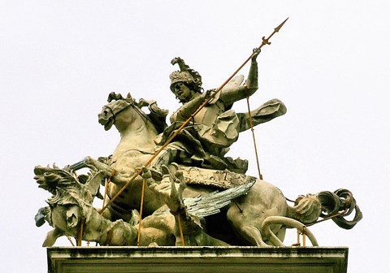
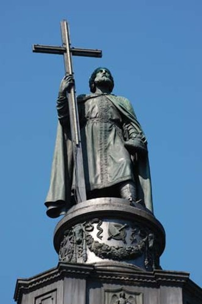
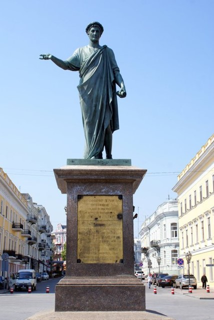
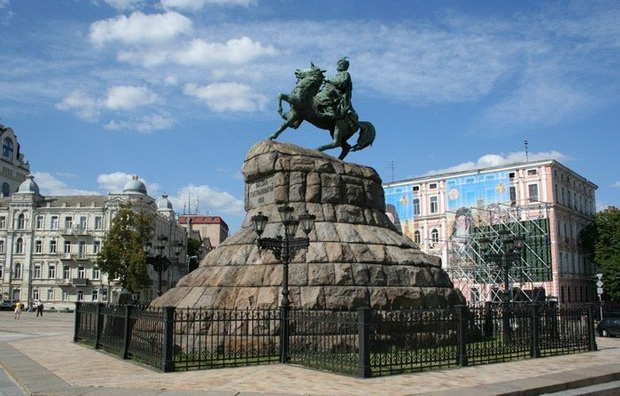
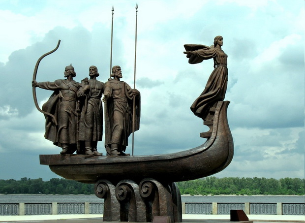
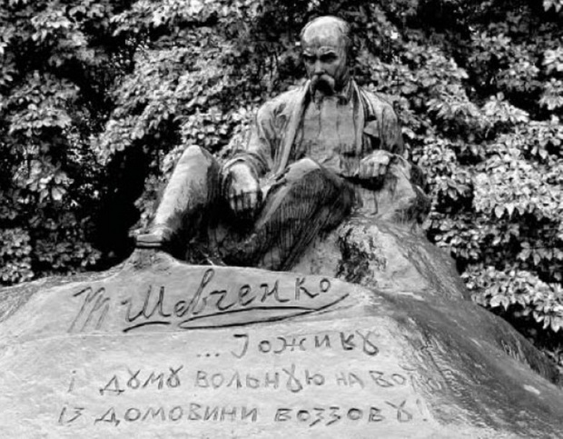

Выравнивание фотографии
Пам'ятники.Скульптури
Скульптури.Пам'ятники
Головна сторінка
Пам'ятники.Скульптури
Мініатюри. Гравюри. Портрети
Памятки давньої історії України
Ікони

Зображення Юрія Змієборця з фасаду собору святого Юра у Львові. Скульптор Й. Пінзель

Пам'ятник князю Володимиру в Києві. 1850-1853 роки.

Пам'ятник градоначальнику та генерал-губернатору А. де РІШЕЛЬЄ в Одесі. 1828 р.

Пам'ятник Богдану Хмельницькому в Києві. 1888 р. Скульптор М. Микешин

Пам'ятник засновнику Києва (Кий, Щек, Хорив и сестра їх Либідь). Скульптор В. Бородай.

Пам'ятник Тарасові Шевченку в Ромнах. 1918 р. Скульптор І. Кавалерідзе.